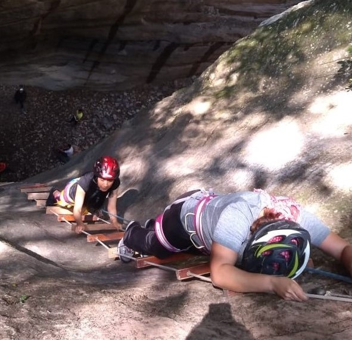

Actividad eco turística de aventura, es una práctica deportiva que consiste en la progresión por cañones o barrancos, cauces de torrentes ríos de montaña; a pie o nadando con el equipo de seguridad y el equipo profesional correspondiente.
